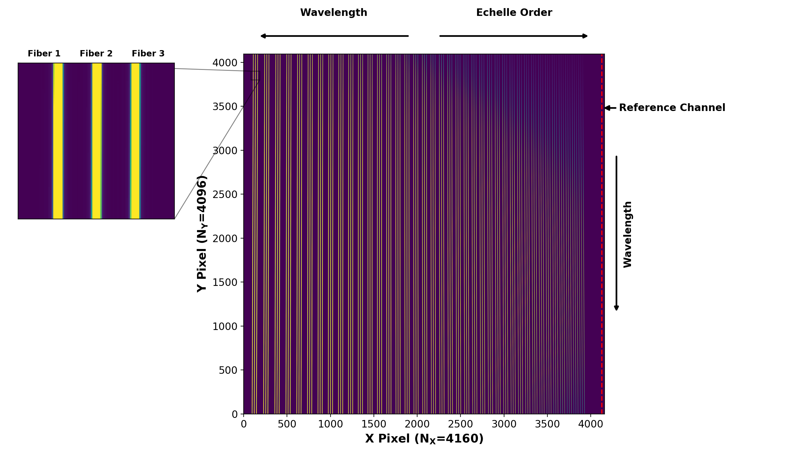
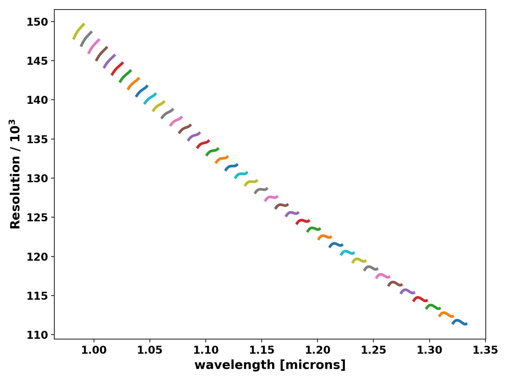
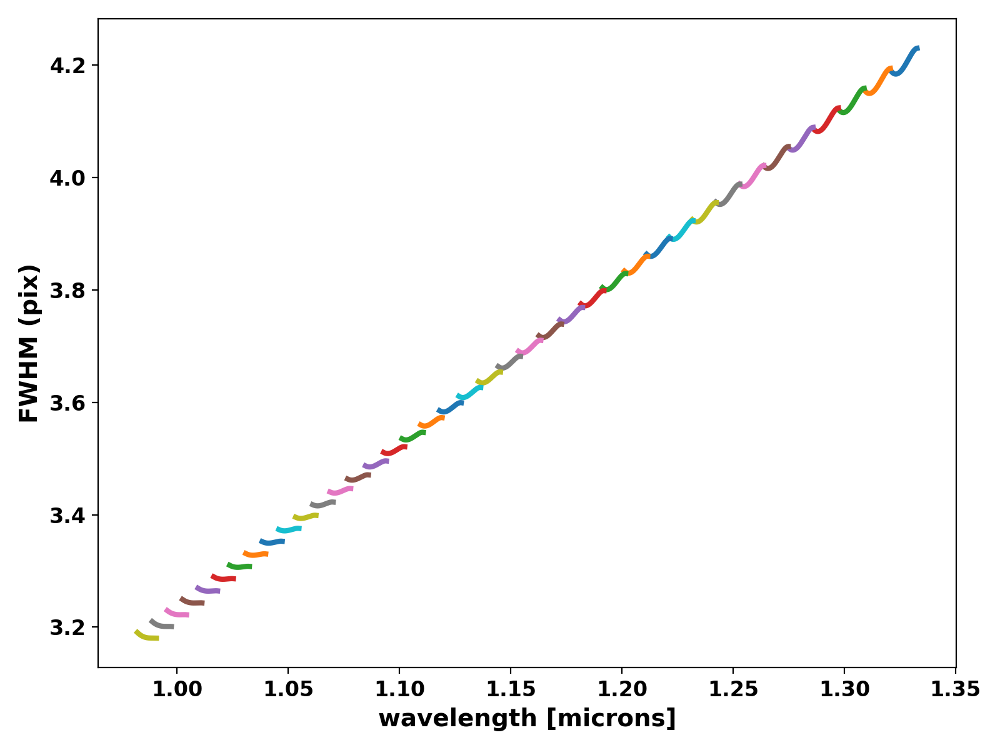

HISPEC Data Format
HISPEC has two spectrographs:
BSPEC: Blue Spectrograph, which covers the Y and J bands (0.98 - 1.327 μm).
RSPEC: Red Spectrograph, which covers the H and K bands (1.49 - 2.46 μm).
HISPEC Echellogram Layout


Spectra are dispersed in the vertical direction (along detector columns) and the red end of the spectrum is on the right side of the detector.
Fibers are named 1, 2, and 3 from left to right when viewing the echellogram with orders oriented vertically and the red end of the spectrum on the right.
Individual fibers are spectrally shifted with respect to each other for the same detector row. For BSPEC, fibers 2 and 3 are shifted by ~ -63 km/s and -126 km/s, respectively, relative to fiber 1. For RSPEC, fibers 2 and 3 are shifted by ~ -79 km/s and -158 km/s, respectively, relative to fiber 1.
Readout channels are 64 pixels wide and are orientated vertically, so echelle orders run parallel to the readout channels.
Level 0 data (rate maps) include the reference channel (65th channel) which has pixels insensitive to light and can be further used to characterize and diagnose detector systematics.
LFC modes are labeled according to the formula \(\nu_{n} = \nu_{0} + n \Delta\nu\) where \(\nu_{0}\) is the frequency of the LFC pump line, \(\Delta\nu\) is the comb line spacing (constant in frequency), and \(n\) is the mode number. Therefore, The LFC mode number \(n\) is anti-correlated with wavelength.
1D Spectra Format
Note
Orders are extracted from bottom-to-top in increasing pixel row number, which corresponds to decreasing wavelength. As a final step, the SpectralExtractionPrimitive flips the extracted spectra in wavelength so that the final extracted spectra are in increasing wavelength order.
For 1D spectra, any quantities related to pixel locations are relative to the flipped axis (i.e., increasing pixel row number corresponds to increasing wavelength).
BSPEC
BSPEC data has 39 orders (\(m=110-148\)) and covers the Y and J bands (\(0.98 - 1.327\ \mu \mathrm{m}\)). Additional parameters for each BSPEC order are shown below.
The spectral resolutions and FWHM values provided below are measured from laser frequency comb lines as sampled on the detector, (e.g., from the effective line spread function). Due to the pixel response function (assumed to be top-hat), this results in an additional loss in resolution due to the pixel response function, and an apparent increase in sampling (both ~5%).
Order |
λ Min (μm) |
λ Max (μm) |
Resolution |
FWHM (pix) |
|---|---|---|---|---|
110 |
1.32112 |
1.3327 |
111600 |
4.2 |
111 |
1.30923 |
1.3207 |
112600 |
4.17 |
112 |
1.29755 |
1.30892 |
113600 |
4.13 |
113 |
1.28608 |
1.29735 |
114600 |
4.1 |
114 |
1.27481 |
1.28597 |
115600 |
4.06 |
115 |
1.26374 |
1.2748 |
116500 |
4.03 |
116 |
1.25285 |
1.26382 |
117500 |
4.0 |
117 |
1.24216 |
1.25302 |
118500 |
3.97 |
118 |
1.23164 |
1.24241 |
119500 |
3.93 |
119 |
1.2213 |
1.23198 |
120500 |
3.9 |
120 |
1.21113 |
1.22172 |
121500 |
3.87 |
121 |
1.20113 |
1.21163 |
122500 |
3.84 |
122 |
1.1913 |
1.2017 |
123500 |
3.81 |
123 |
1.18162 |
1.19194 |
124500 |
3.78 |
124 |
1.1721 |
1.18233 |
125500 |
3.75 |
125 |
1.16273 |
1.17288 |
126500 |
3.72 |
126 |
1.15351 |
1.16358 |
127500 |
3.7 |
127 |
1.14444 |
1.15442 |
128500 |
3.67 |
128 |
1.13551 |
1.14541 |
129500 |
3.64 |
129 |
1.12671 |
1.13654 |
130500 |
3.62 |
130 |
1.11805 |
1.1278 |
131500 |
3.59 |
131 |
1.10953 |
1.11919 |
132500 |
3.56 |
132 |
1.10113 |
1.11072 |
133500 |
3.54 |
133 |
1.09286 |
1.10237 |
134500 |
3.51 |
134 |
1.08471 |
1.09415 |
135500 |
3.49 |
135 |
1.07668 |
1.08605 |
136400 |
3.47 |
136 |
1.06877 |
1.07807 |
137400 |
3.44 |
137 |
1.06097 |
1.07021 |
138400 |
3.42 |
138 |
1.05329 |
1.06246 |
139300 |
3.4 |
139 |
1.04572 |
1.05482 |
140300 |
3.37 |
140 |
1.03826 |
1.04729 |
141200 |
3.35 |
141 |
1.0309 |
1.03987 |
142200 |
3.33 |
142 |
1.02365 |
1.03255 |
143200 |
3.31 |
143 |
1.01649 |
1.02533 |
144100 |
3.29 |
144 |
1.00944 |
1.01821 |
145100 |
3.26 |
145 |
1.00248 |
1.0112 |
146100 |
3.24 |
146 |
0.99562 |
1.00427 |
147000 |
3.22 |
147 |
0.98886 |
0.99745 |
148000 |
3.2 |
148 |
0.98218 |
0.99071 |
149000 |
3.18 |
BSPEC Spectral Resolution


BSPEC Spectral Sampling


RSPEC
Under development.